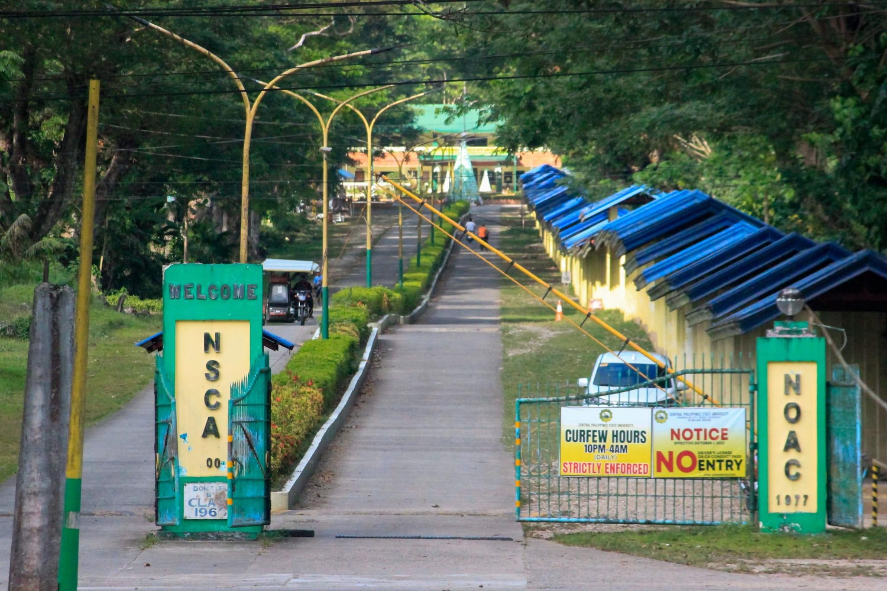
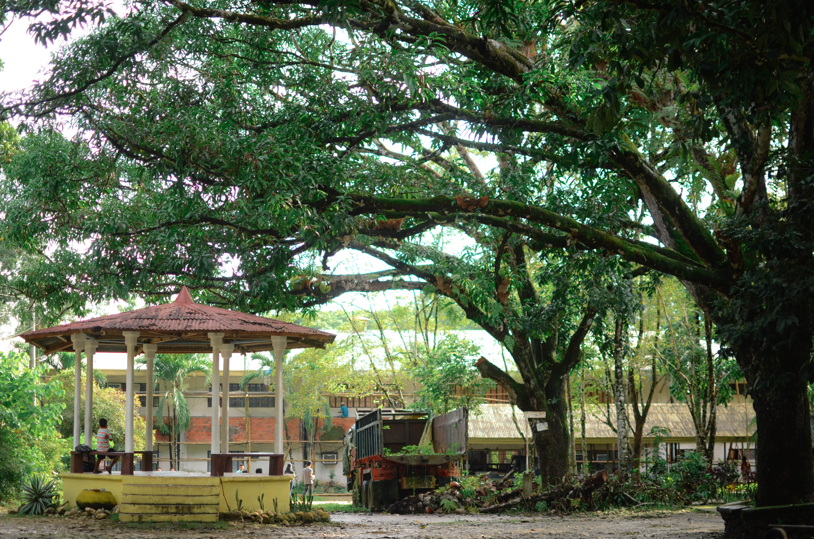
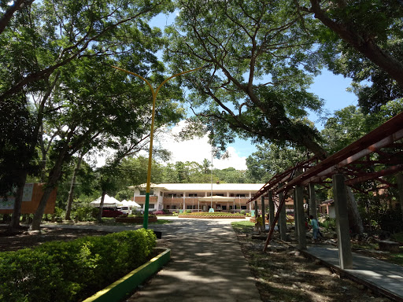
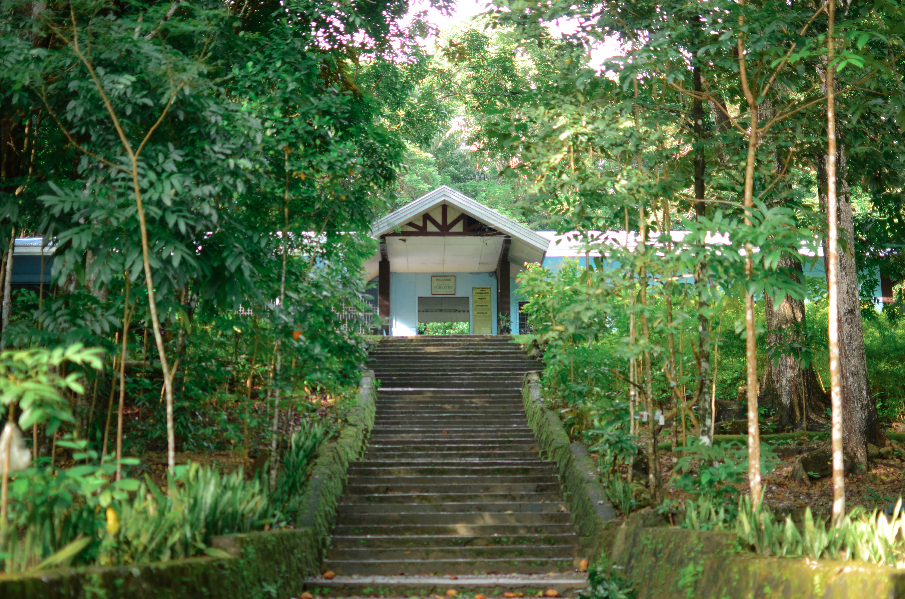
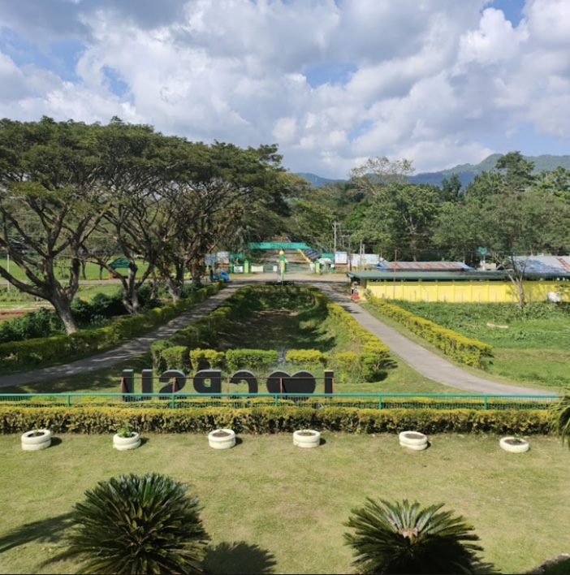

1 / 6

2 / 6

3 / 6

4 / 6

5 / 6

6 / 6

A gallery of pictures is a visual feast that transcends the boundaries of time and space, inviting viewers into a world of colors, emotions, and narratives frozen in frames. Each picture tells a story, capturing a fleeting moment or a profound emotion, and collectively, they create a mosaic that reflects the diversity of human experiences.
In a gallery of pictures, the curator’s selection and arrangement play a crucial role. The juxtaposition of images can evoke powerful connections and narratives, leading viewers on a visual journey that transcends individual photographs. The carefully curated gallery transforms a collection of pictures into an immersive experience, where themes emerge, and stories unfold with each step.
Beyond aesthetics, a gallery of pictures can also serve educational purposes. It can document historical events, showcase cultural nuances, and shed light on societal issues. Viewers are not only aesthetically engaged but also intellectually stimulated, prompting reflection and dialogue.